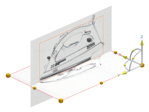

Estimated time to complete: 7–10 minutes
In this activity, you will import two raster images and position them in preparation to reference them for design work.

Launch the Import and manipulate raster images activity.